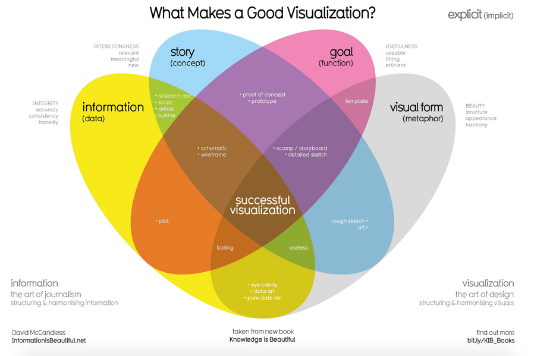
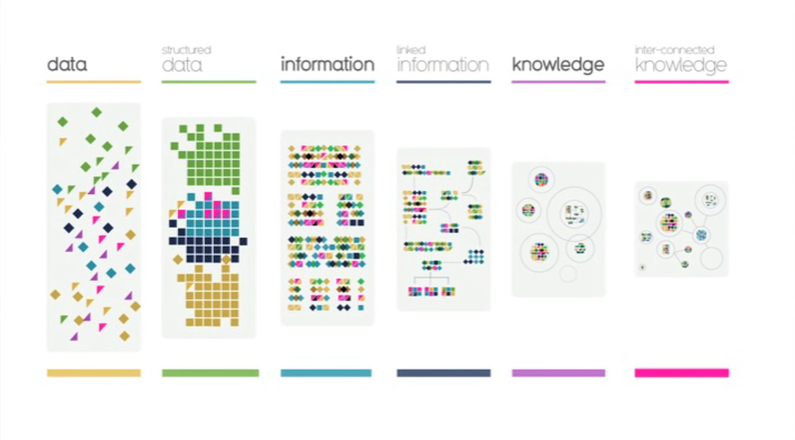

Visualizations - Studio Art
M Class: Storytelling with Visualizations
W Lab: Tableau Public
F Discussion: Journalism, Fake News, Censorship and Trust
For the first time this semester, this week we have no readings with code. Instead, we'll work with the most popular commercial data visualization software package called Tableau. To prepare students for Wednesday's lab and their first visualization mini-project, we'll also hold an optional Tableau Bootcamp this Tuesday 11am-12:15 in Timberlake. Tableau is one of the best examples of how computational work is evolving towards what is called a "low-code", "no-code" or "visual programming" style.
The art of storytelling through engaging and interactive visualizations is a valuable skill as is the ability to critically assess such works. This week also lays the foundations for your first mini-project: visualization. After this week concludes on Friday, you'll have one more week to create and hand in a Tableau visualization that tells a compelling narrative on a topic of your choosing. Hopefully, you'll be inspired by the many great examples we review this week.
Monday Introduction:
We open with a wonderful introduction to the beauty of data visualization by David McCandleless. Then we study some fundamental guiding principles of visual storytelling as well as how to translate data and narratives into interactive visualizations. Finally, we learn from the masters by perusing and critiquing some award-winning data visualizations.
- Knowledge is Beautiful, David McCandleless, The RSA Conference (17:59) Feb 2015 (Apologies for the 'business' orientation, but this is one of the best and most concise overviews of data visualization)
- DataStories: Creating Compelling Stories with Data, Miriam Gilbert, SlideShare.net, Feb 2014 (Again, this is an excellent presentation but you have to mentally reinterpret applications from the business world to Digital Humanities.)
- 2019 Kantar Information is Beautiful Awards, Find one topic that speaks to your interest (e.g. Visualization & Information Design, Humanitarian, News, Sports, etc) and select one of the 2019 award winners in that category to critique in class based upon the Miriam Gilbert's DataStories slide presentation above.
- Quickly peruse data-driven article "The 5 Types of Nicolas Cage Films" at the NYTimes data journalism spinout fivethirtyeight.com website. Focus on the chart at the top of the article and come to class prepared to critique how it succeeds and/or fails to use visualizations to convey an interesting commentary on film and culture.
Tuesday 11am-12:15: Python/DataCamp Help
(O'Connor Seminar Room or Timberlake House if O'Connor is occupied)
In today's lab we work with Tableau Public. We'll see how to create beautiful visualizations with the most popular data visualization software for data analytics. We'll also study an engaging long-form visualization that demonstrates how to deeply integrate both visual and textual information in order to tell an insightful and entertaining narratives.
- Download and install Tableau Public software on your laptop (Win or Mac). Create a free account, login and navigate to the tutorial videos under your home page's top menu bar [Resources] -> [How-to-Videos]. Watch videos for Units 1, 2, 7-16 which we'll step through in class. (Try to work through the tutorials. The necessary data files are listed beneath each video.)
- Viz of the Day, Tableau Public: Quickly peruse and find one favorite viz to critically analyze in class by the metrics in Monday's DataStories reading.
- Ali Wong, Structure of Stand-Up Comedy, Russell Goldenberg and Matt Daniels, Pudding.com, Feb 2018 (Warning: slightly spicy language and racy topics.)
Thursday 11am-12:15: TableauPublic/Visualization Mini-Project Help
(Timberlake House, either a seminar room or Prof Elkins office)
Friday Discussion:
We close the week with a survey of issues related to Data Journalism and Visual Narratives. We explore the many and varied sources of potentially biased/fake news including readers, advocacy journalist, newsroom subcultures, concentrated media conglomerates and national security interests. Echoing our first two weeks questioning data and algorithms, our third week on visualization also brings into question if and how we can escape Plato's Cave to perceive "the truth" through misleading visual narratives projected onto the cave walls of Main Stream Media (MSM).
- Quiz Visualization
- The Data Journalism Handbook, DataCamp.com, Nov 2016
- Astroturf and Manipulation of the Media, Sheryl Atkins, TED (10:36) Feb 2016
- The CIA and the Media, Carl Bernstein (1973 Pulitzer Prize winning journalist), Rolling Stone Magazine, Oct 1977 (Read tan sidebar titled "Working Press - CIA Style" and main article up to the paragraph starting with "Sulzberger claims that he was never formally “tasked” by the Agency..."
- Snowden Interview: Why the Media Isn't Doing It's Job, Emily Bell, Columbia Journalism Review, May 2016
Quiz Topics:
- Be able to re-label a blanked out diagram by David McCandless in Fig.1
- From Miriam Gilbert's "DataStories: Creating Compelling Stories with Data" presentation, be able to identify in multiple-choice format (a) the 4 Key Ingredients for Visual Storytelling, (b) Gestalt Principles of Perception, and (c) Pre-Attentive Attributes based on the human visual system
- Identify the 5 types of Nicholas Cage movies and several characteristics that make Cage a uniquely subject of data analysis among Hollywood actors.
- Be able to label an object hierarchy corresponding to the main components from Tableau Public as presented in class on Wednesday.
- What were the three core concepts which structured Ali Wong's routine?
- Identify the 8 steps to becoming a Data Journalist according to DataCamp.com
- Investigative journalist Sharyl Attkisson
- Carl Bernstein on the CIA and The Media
- In the Columbia Journalism Review's interview, what the main reasons Snowden gives for the media increasingly ignoring traditional role of informing the public?
